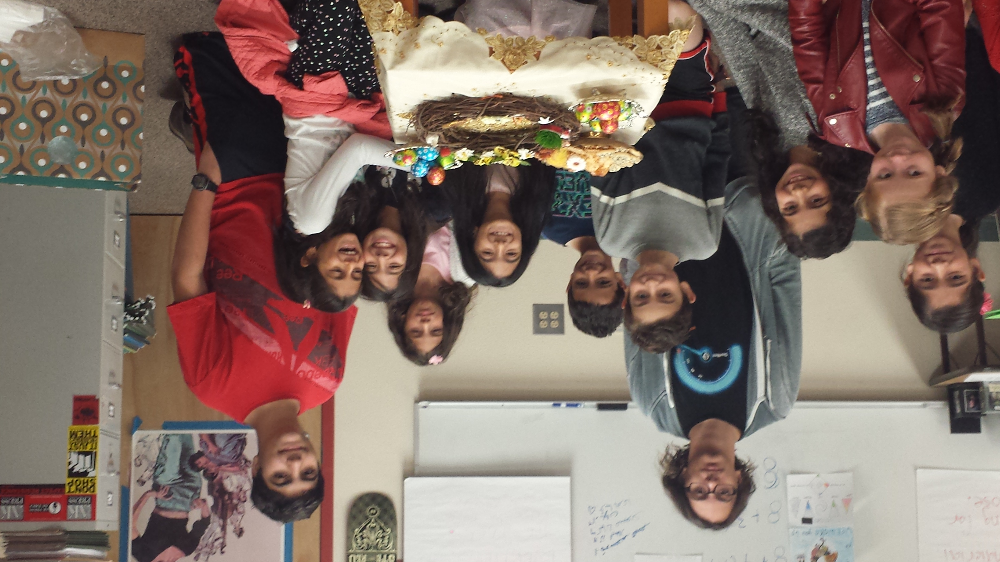

Arman Agahi
Hello, and welcome to my website! My name is Arman Agahi, and this website is here to help showcase exactly what I can do, what I have done, and what I hope to do in my past, present, and future careers! I am a freshman at the University of California Riverside, pursuing a degree in business law. I graduated highschool in 2019 from Canyon Crest Academy (CCA) in San Diego. I am familiar with many different forms of software, Working with applications such as Microsoft Office, Powerpoint, Word, and Photoshop. In addition, I am also slightly familiar with html, and can code, creating a website if needed. Besides computer experience, I am also comfortable with power tools, familiar with manual labor, and fully certified as a lifeguard. I am a team player, and have worked with children in the past as a volunteer for a language school. As an employee, I would be flexible and able to fill in most roles you could assign to me.
Although you can find out more in the experience section, I want to quickly go over some of my past experiences in work. My most recent job was as a lifeguard at the Bay Club, where I worked to keep kids safe in the pool, as well as occasionally working with camps and lessons to help teach kids how to swim and how to be water safe in general. This job held a big focus on not only watching and helping children, but also planning and managing customers who wished to plan for a lesson or meet with a specific teacher. Besides these, I have also done smaller, mainly volunteer jobs. Some of these jobs included cat-sitting, being a Teacher's Assistant, speaking in public for middle schoolers, and raising money for charity. Mostly, these jobs were done when I was younger, and focused on helping take care and teach kids, but I am glad that I took these courses. They greatly helped me develop my public speaking skills, taught me responsibility and planning, and in general gave me the experience needed for future jobs. One of the biggest, and earliest, jobs I worked on was raising money for Solutions for Change. We raised money through selling boba tea at our high school, creating, packaging, and selling it ourselves, and donating the money to the charity, which would use it to help the homeless. This was one of the first jobs I did that had a weekly schedule, wasn’t a family-friend chore, and actually involved large amounts of work, labor, and money. Currently, I am still working as a lifeguard, although I hope that after graduating with a business law degree, I will be able to find work in either a consultants or a higher up assistant.
Experience
Lifeguard
• Worked as a lifeguard for the bay club
• Helped customers plan lessons/mettings
• Certified lifeguard by The Red Cross
Volunteer
• Sold Boba in order to raise money
• Mainly focused on packaging and distributing boba
Teaching Assistant
• Worked with young children
• Teaching language, grammer, history, etc.
Education
Canyon Crest Academy
University of California Riverside
Portfolio
